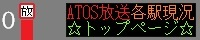
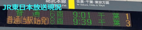
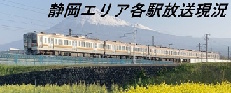

リンク集
当サイト管理者が作成しているその他サイト
| Miyachi公式サイト（関東） | こちらのサイトでは様々な駅の様々な音声をたくさん公開しています。 |
|---|---|
| ATOS放送シュミレーター | 阪和線委員会メンバーが作成しているデスクトップアプリの紹介サイトです。 |
| 阪和線委員会公式～JR東日本発車メロディ～ | 阪和線委員会メンバーが作成中の発車メロディのサイトです。 |
当サイト管理者がおすすめするその他サイト
|
 ATOS放送各駅現況 |
ATOS放送の管轄内の各駅の現況を載せられています。付帯などの確認には最適かと思います。そしてJR東日本管内の発車メロディ一覧も存在します。 |
|---|---|
|
 JR東日本放送各駅現況 |
JR東日本の管轄する範囲の各駅の現況を載せられています。付帯などの確認には最適かと思います。(ATOS放送以外のみ) |
|
 静岡エリア各駅放送現況 |
静岡周辺各駅の現況を載せられています。付帯などの確認には最適かと思います。このサイトの「JR東日本発車ベル変遷カレンダー」はとても便利です。(主に静岡エリア) |
|
補助放送wiki |
補助放送について解説されています。 |
Youtube関連
私の友達がATOS放送で遊んでいるチャンネルのようです？